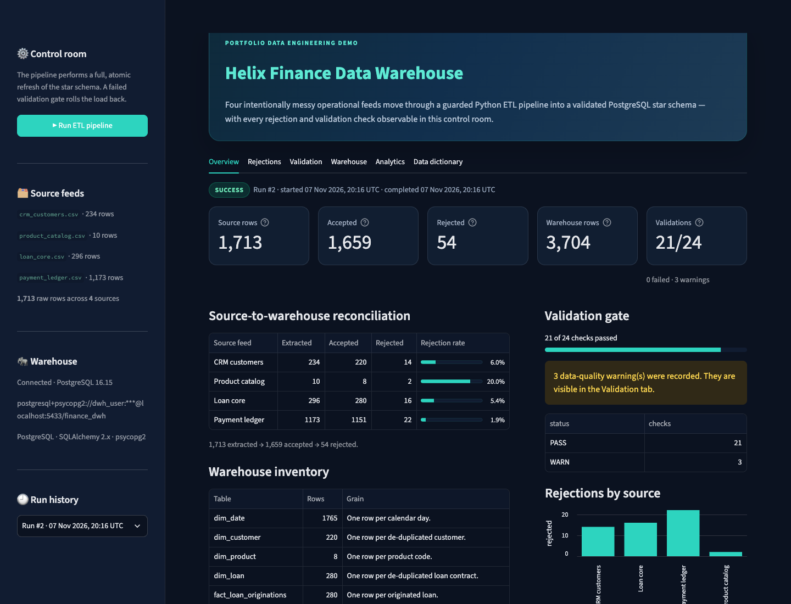

Ingest
Four feeds, zero special cases
CRM customers, a product catalog, a lending core, and a payment ledger arrive as separate CSVs with realistically inconsistent shapes and values.
Data engineering portfolio
Four messy operational feeds. One guarded Python ETL pipeline. A PostgreSQL star schema you can trust — and inspect down to the last rejected row.

Results from the seeded demo run · 0 critical validation failures
01 The project
Helix Finance is a small, end-to-end data warehouse of a fictional lender. It covers the less glamorous parts of analytics work: cleaning, rejecting, reconciling, and proving the result.
CRM customers, a product catalog, a lending core, and a payment ledger arrive as separate CSVs with realistically inconsistent shapes and values.
Uniqueness, foreign keys, row counts, and source-to-warehouse totals are verified before the transaction commits.
Four conformed dimensions and two facts make loan originations and transaction servicing easy to query separately — and together.
Every rejected row keeps its source, row number, reason code, and complete raw JSON payload. Nothing disappears into a log file.
Six reporting queries cover portfolio mix, originations, transactions, top customers, loan status, and customer segments.
Python, Pandas, PostgreSQL, SQLAlchemy, and Streamlit. One Docker Compose service, no orchestration tax.
02 Architecture
A full atomic refresh keeps the demo simple to reason about. The pipeline is intentionally readable, not hidden behind an orchestration framework.
Read four source CSVs as strings so natural IDs never lose their shape.
Normalize dates, amounts, categories, and IDs. Resolve duplicates and missing values.
Check uniqueness, referential integrity, row counts, and monetary reconciliation.
Replace the star schema atomically through SQLAlchemy. Blocking failures roll back.
Inspect run history, rejects, checks, warehouse tables, and analytical reports.
A blocking failure rolls back the replacement, leaving the previous warehouse snapshot intact.
03 Data quality
Real operational data is messy. The warehouse should make that visible, not paper over it. Rejected rows are quarantined with enough context to fix the source.
The seed data intentionally includes duplicates, missing emails, malformed dates, inconsistent casing, and orphan foreign keys.
04 The warehouse
The star schema keeps the grain explicit. A separate audit area keeps observability out of the analytical path.
Date, customer, product, and loan. Stable natural keys, clean surrogate keys.
Loan originations at contract grain; transactions at event grain.
Runs, rejected rows, and validation results persist across refreshes.
Dimensions
Facts
05 Quickstart
The repository includes deterministic seed data, a PostgreSQL Compose service, and the complete ETL pipeline. No API keys. No external services. All data is synthetic.
git clone https://github.com/Mo-Shakib/Helix-Finance.git
cd Helix-Finance
cp .env.example .env
docker compose up -d
python3 -m venv .venv
source .venv/bin/activate
pip install -r requirements.txt
python -m finance_dwh.pipeline
streamlit run app.py06 The source
Every transformation, check, rejected row, and SQL report is in the repository. The whole build is designed to be read.